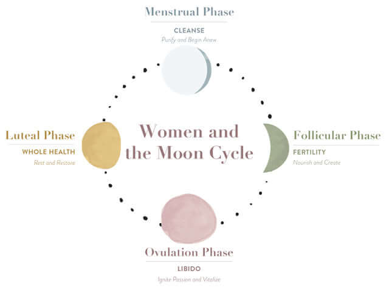

My roommate thinks I'm losing it. She walked into the kitchen last week and saw me staring at a lunar calendar on my phone, planning my fasting schedule around the full moon. She asked what I was doing. I told her I was aligning my eating windows with the lunar cycle. She stared at me for a long time. Then she said, "You're going full moon witch on me, aren't you?" I laughed. But she wasn't totally wrong.
The idea started a few months ago. I had been listening to a podcast about circadian rhythms and how light exposure affects our biology. The host mentioned that the moon also has an effect, not through gravity or mysticism, but through light. The full moon is bright enough to affect melatonin production. It can disrupt sleep, which affects hunger hormones, which makes fasting harder. That got me curious. If the moon affects sleep, and sleep affects fasting, maybe I should plan my fasting around the moon.
I did some research. There's not a ton of science on lunar fasting specifically, but there is evidence that sleep is worse during a full moon. One study found that people took longer to fall asleep and had less deep sleep around the full moon. Another study found that melatonin levels were lower. That makes sense because melatonin is suppressed by light. And if you're sleeping poorly, your hunger hormones are thrown off. Ghrelin goes up. Leptin goes down. You feel hungrier and less satisfied. That's a recipe for breaking your fast.
So I decided to experiment. For three months, I tracked my sleep, my hunger levels, and my fasting compliance against the lunar cycle. I marked the new moon, the full moon, and the quarters. I kept a journal. I noted how I felt each day and whether I stuck to my eating eating-window-planner.
The first month was eye‑opening. Around the full moon, my sleep was noticeably worse. I woke up more often. I felt tired the next day. I craved carbs and sugar. I broke my fast early twice that week. The new moon, on the other hand, was the opposite. I slept like a rock. I wasn't hungry. I easily hit my 18‑hour fast. The difference was dramatic.
The second month confirmed the pattern. Full moon week was harder. Not impossible, but harder. I had to be more intentional about my eating eating-window-planner. I had to drink more water and distract myself with other activities. New moon week was effortless. My body seemed to know what to do.
The third month, I started planning around it. I scheduled my most ambitious fasts for the new moon. I gave myself more flexibility during the full moon. I would still fast, but I would allow myself a shorter eating-window-planner and more comforting foods. That approach worked much better. I wasn't fighting my biology. I was working with it.
I told my roommate about my findings. She said, "So you're saying the moon makes you hungry?" I said, "Sort of. It's not the moon itself. It's the light. The full moon is bright enough to affect sleep, which affects hunger." She said, "That sounds like astrology with extra steps." I couldn't argue with that.
But the data was compelling. My sleep fasting-session-tracker showed a clear pattern. My fasting compliance dropped by about 20% during the full moon week. My hunger ratings were higher. My energy was lower. It wasn't mystical. It was physiological.
I also noticed that my mood was different. Around the full moon, I was more restless and anxious. Around the new moon, I was calmer and more grounded. That could be the sleep effect, or it could be something else. I don't have a clean explanation. But the pattern was real.
One thing I started doing was adjusting my fasting eating-window-planner during the full moon. Instead of 11 AM to 5 PM, I would do 1 PM to 6 PM. That gave me a slightly later start and a shorter eating-window-planner. It was easier to stick to. I also added more electrolytes to my water during full moon week to help with the fatigue.
Another thing I did was pay attention to the moon's phase when I planned social events. If I had a dinner party or a happy hour, I tried to schedule it around the new moon when I was more resilient. The full moon was for quiet nights at home. That wasn't always possible, but when it was, it helped.
I also started doing a "moon check‑in" at the start of each week. I would look at the lunar calendar and note the phase. Then I would adjust my fasting-goal-planner accordingly. New moon week was for pushing myself. Full moon week was for being gentle. The other weeks were in between. It was a small change, but it made a big difference in my consistency.
My roommate still thinks I'm a little out there. But she also noticed that I've been more consistent with my fasting. She asked me what changed. I told her about the moon. She rolled her eyes. Then she asked me to show her the lunar calendar.
It's funny. I started this as a nerdy experiment. I didn't expect it to become a regular part of my routine. But now I can't imagine fasting without it. The moon is just there, doing its thing. It's not a mystical force. It's a natural light source that affects our biology. Ignoring it seems silly.
If you're struggling with fasting consistency, I'd recommend paying attention to the moon. You don't need to become a full moon witch. Just note how you feel around the full moon. If you notice a pattern, adjust your schedule. It's free, it's easy, and it might help.
The moon isn't going to fix everything. But it's one more tool in the toolbox. And if it helps you stay consistent, who cares if it sounds a little weird?
I track my lunar observations in the FastingTool's Session Tracker. I just add a note about the moon phase.
The Metabolic Analyzer helps me see how my hunger and energy levels shift with the moon cycle.
📊 Metabolic Analyzer Track your hunger, energy, and mood alongside the lunar calendar. See the correlation. All data stays in your browser — we never see it. And the Window Planner lets me adjust my schedule based on what I know about the coming week's moon phase.
📅 Window Planner Plan your eating windows around the moon. The tool suggests adjustments for full moon and new moon weeks. All data stays in your browser — we never see it. I'm not saying I'll only fast on the new moon. That's too extreme. But I'm paying attention now. And paying attention is half the battle.
My roommate still thinks I'm a little crazy. But she also asked me to show her the lunar calendar. That's a start.
— Maya, East Austin
P.S. The full moon is tomorrow. I'm planning a shorter fasting eating-window-planner and an early bedtime. I'll let you know how it goes.